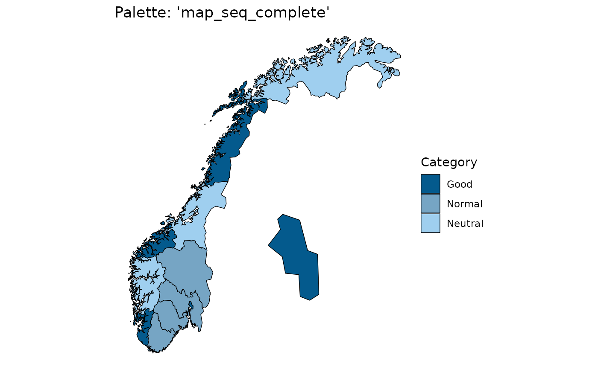
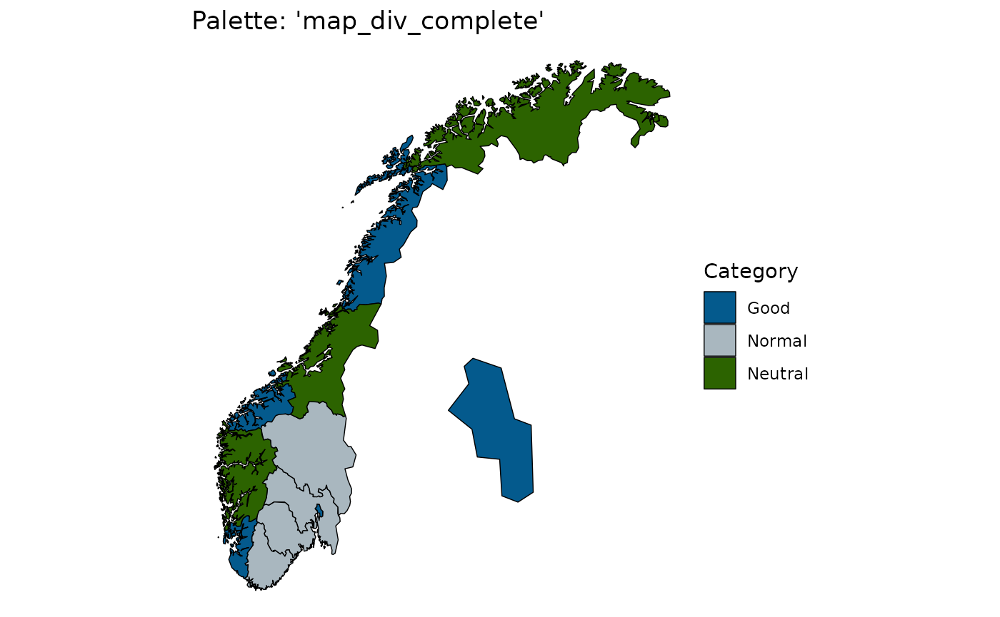
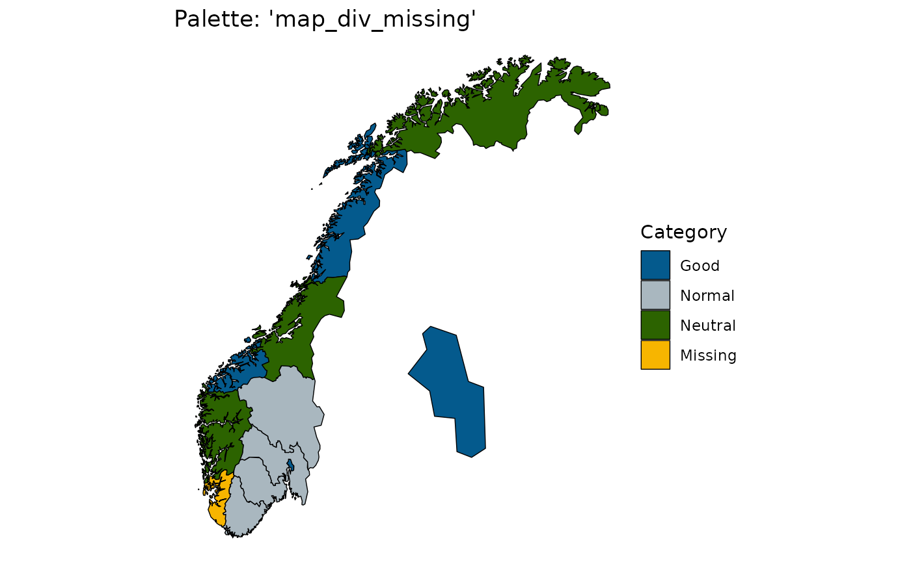
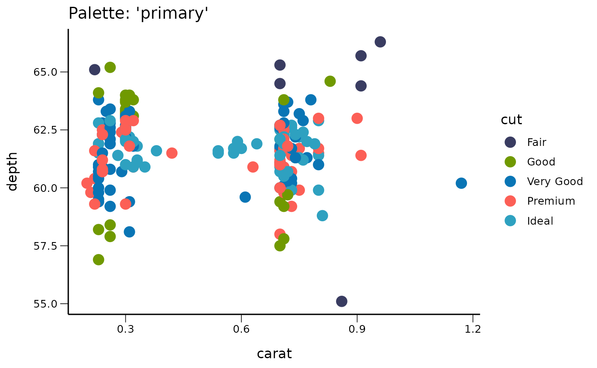
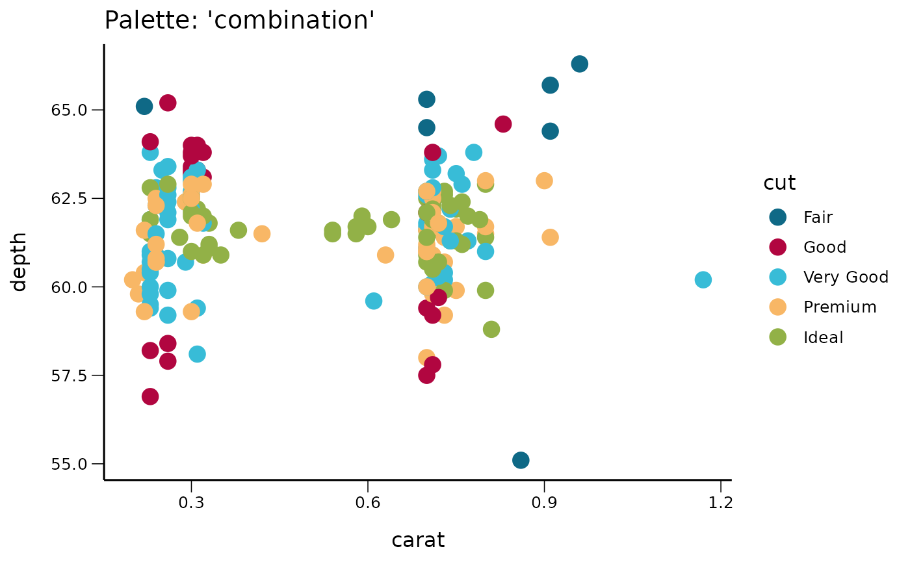
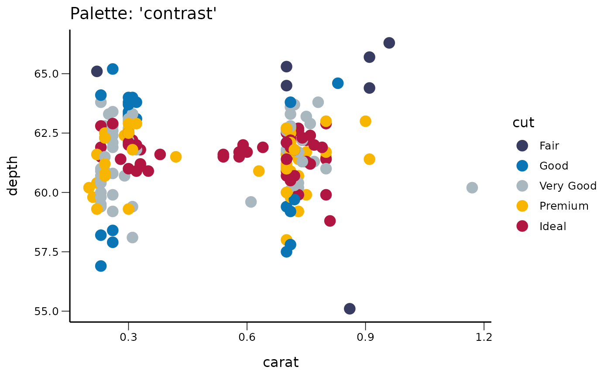
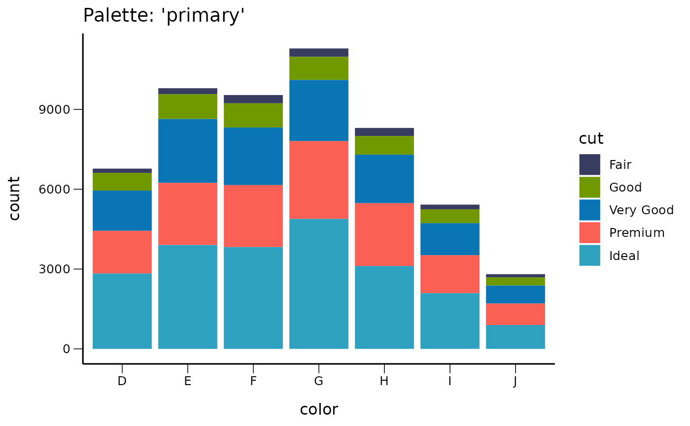
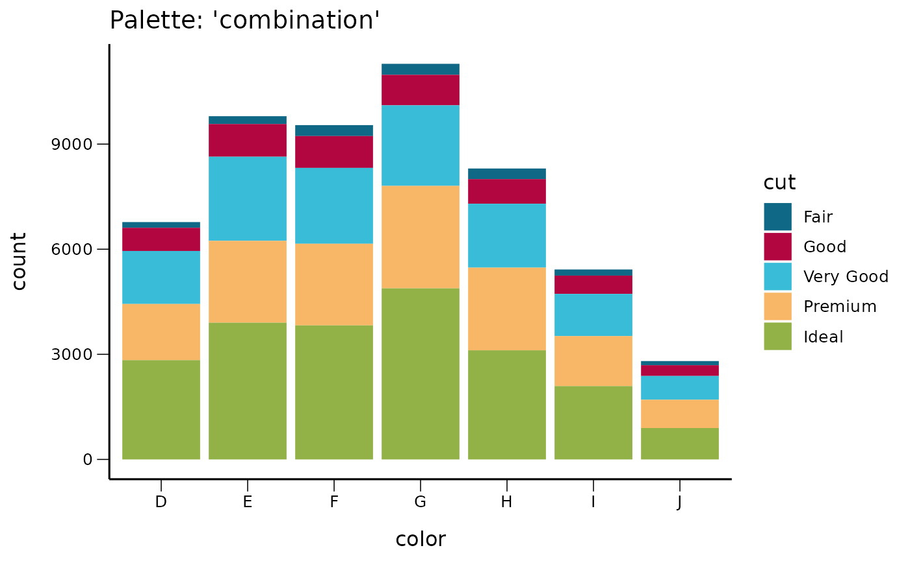
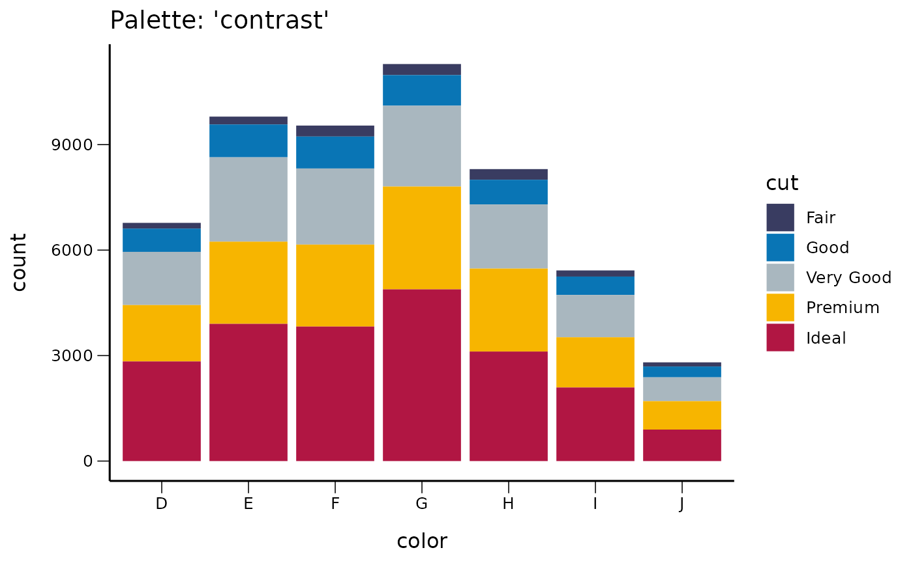

Maps
pd <- fhimaps::norway_nuts3_map_b2020_insert_oslo_dt
data <- unique(pd[,c("location_code")])
suppressWarnings(data[,category:=rep(c("Good","Normal","Neutral","Bad","Very Bad"),each=4)[1:.N]])
data[,category_with_missing:=category]
data[1,category_with_missing:="Missing"]
data[,category:=factor(category,levels=c("Good","Normal","Neutral","Bad","Very Bad"))]
data[,category_with_missing:=factor(category_with_missing,levels=c("Good","Normal","Neutral","Bad","Very Bad","Missing"))]
pd[data,on="location_code",category:=category]
pd[data,on="location_code",category_with_missing:=category_with_missing]Here we have a sequential map:
q <- ggplot()
q <- q + geom_polygon(data = pd, aes( x = long, y = lat, group = group, fill=category), color="black", size=0.25)
q <- q + coord_quickmap()
q <- q + splstyle::scale_fill_fhi("Category",palette = "map_seq_complete", direction = 1)
q <- q + labs(title="Palette: 'map_seq_complete'")
q <- q + theme_void()
q
Here we have a diverging map:
q <- ggplot()
q <- q + geom_polygon(data = pd, aes( x = long, y = lat, group = group, fill=category), color="black", size=0.25)
q <- q + coord_quickmap()
q <- q + splstyle::scale_fill_fhi("Category",palette = "map_div_complete", direction = 1)
q <- q + labs(title="Palette: 'map_div_complete'")
q <- q + theme_void()
q
Here we have a sequential map with missing:
q <- ggplot()
q <- q + geom_polygon(data = pd, aes( x = long, y = lat, group = group, fill=category_with_missing), color="black", size=0.25)
q <- q + coord_quickmap()
q <- q + splstyle::scale_fill_fhi("Category",palette = "map_seq_missing", direction = 1)
q <- q + labs(title="Palette: 'map_seq_missing'")
q <- q + theme_void()
qHere we have a diverging map with missing:
q <- ggplot()
q <- q + geom_polygon(data = pd, aes( x = long, y = lat, group = group, fill=category_with_missing), color="black", size=0.25)
q <- q + coord_quickmap()
q <- q + splstyle::scale_fill_fhi("Category",palette = "map_div_missing", direction = 1)
q <- q + labs(title="Palette: 'map_div_missing'")
q <- q + theme_void()
q
Points
q <- ggplot(diamonds[1:200,], aes(carat, depth, color = cut))
q <- q + geom_point(size = 4)
q <- q + splstyle::scale_color_fhi(palette = "primary")
q <- q + labs(title="Palette: 'primary'")
q <- q + theme_fhi_basic()
q
q <- ggplot(diamonds[1:200,], aes(carat, depth, color = cut))
q <- q + geom_point(size = 4)
q <- q + splstyle::scale_color_fhi(palette = "combination")
q <- q + labs(title="Palette: 'combination'")
q <- q + theme_fhi_basic()
q
q <- ggplot(diamonds[1:200,], aes(carat, depth, color = cut))
q <- q + geom_point(size = 4)
q <- q + splstyle::scale_color_fhi(palette = "contrast")
q <- q + labs(title="Palette: 'contrast'")
q <- q + theme_fhi_basic()
q
Barcharts
We first try some barcharts with the primary palette and two different themes:
q <- ggplot(diamonds, aes(x=color, fill = cut))
q <- q + geom_bar()
q <- q + splstyle::scale_fill_fhi(palette = "primary")
q <- q + labs(title="Palette: 'primary'")
q <- q + theme_fhi_basic()
q
q <- ggplot(diamonds, aes(x=color, fill = cut))
q <- q + geom_bar()
q <- q + splstyle::scale_fill_fhi(palette = "combination")
q <- q + labs(title="Palette: 'combination'")
q <- q + theme_fhi_basic()
q
q <- ggplot(diamonds, aes(x=color, fill = cut))
q <- q + geom_bar()
q <- q + splstyle::scale_fill_fhi(palette = "contrast")
q <- q + labs(title="Palette: 'contrast'")
q <- q + theme_fhi_basic()
q